Clustering
Table of contents
Clustering
: 거리를 계산해 유사한 data point끼리 같은 Cluster로 묶어주는 것.
- 비지도학습. 종속변수가 없고, 독립변수만 사용해서 답을 찾는 방식.
- 대체로 탐색적 데이터 분석의 일부로 수행된다. (ex. 소비자 Cluster를 나눈 후 → 어떤 Cluster가 A제품을 많이 사는지 Regression 문제 풀기)
K-Means Clustering
기본 개념
- 데이터 포인트 (벡터) 간의 거리를 계산해, 거리가 짧은 애들끼리 묶어 K개의 Cluster를 형성해주는 방식.
- K 값을 잘 정해주는 것이 중요하다!
- 보통 유클리디안 방식으로 거리를 계산.
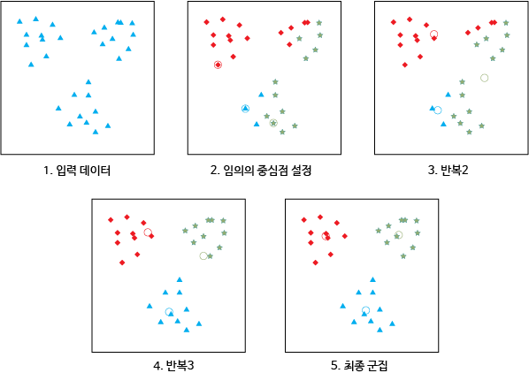
(출처: tcpschool.com)
*K-Means Clustering 과정:
- K의 값을 정한다 (몇 개의 Cluster로 나눌 것인지)
- 데이터셋에서 임의로 K개의 중심점을 선택.
- 각 점을 K개의 중심점 중 가장 가까운 점이 속한 Cluster로 assign.
- 각 그룹에 속하는 점들의 평균값을 새로운 중심점으로 함.
- 색이 변하는 점이 없을 때까지 3, 4번을 계속 반복.
scikit-learn으로 구현
from sklearn.datasets import load_iris
from sklearn.cluster import KMeans
import pandas as pd
import numpy as np
import seaborn as sns
import matplotlib.pyplot as plt
1. 데이터 준비
# 예시이므로, make_blobs를 사용해 clustering하기 쉬운 데이터를 준비
from sklearn.datasets import make_blobs
X, y = make_blobs(n_samples=100, centers=3, n_features=2) # 변수 2개, 샘플 100개, 중심점 3개로 blob 만들기
X = pd.DataFrame(X, columns=['a', 'b'])
X.head()
| a | b | |
|---|---|---|
| 0 | 8.66962 | -2.95918 |
| 1 | -10.3818 | 0.959058 |
| 2 | 9.45125 | -2.50409 |
| 3 | -4.03838 | -9.18607 |
| 4 | 10.9778 | -2.85563 |
sns.scatterplot(data=X, x="a", y="b");
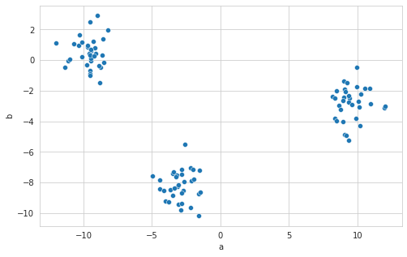
2. Clustering
model = KMeans(n_clusters=3)
- n_clusters: 몇 개의 cluster로 나눌 것인지 설정 (K)
model.fit(X)
KMeans(algorithm='auto', copy_x=True, init='k-means++', max_iter=300,
n_clusters=3, n_init=10, n_jobs=None, precompute_distances='auto',
random_state=None, tol=0.0001, verbose=0)
- init: initialization 방법.
k-means++,random, 혹은 직접 array 형태로 지정- default는 k-means++. 맨 처음 중심점을 보다 전략적으로 배치하는 방식.
- 우선 데이터포인트 1개를 첫번째 중심점으로 선택하고, 이와 최대한 먼 곳에 있는 데이터포인트를 다음 중심점으로 선택, …
- 맨 처음 중심점들이 서로 근접하게 위치하는 것을 방지해주기 때문에 단순히 random하게 고르는 것보다 더 최적의, 효율적인 clustering이 가능하다
- random: 맨 처음 중심점을 말 그대로 무작위로 K개 고르는 방식
- default는 k-means++. 맨 처음 중심점을 보다 전략적으로 배치하는 방식.
- max_iter: 중심과 다른 데이터포인트 간의 거리를 계산해서 계속해서 cluster를 update해주는 것을 최대 몇 번 반복할 것인지 지정. max_iter 수를 작게 지정해주면 속도가 빨라지지만 정확도는 떨어짐. default=300
- n_init: 서로 다른 초기 중심점을 바탕으로 몇 번 알고리즘을 반복할 것인지 지정. default=10. 최종 결과는 inertia 계산값이 가장 잘 나오는 결과물로 출력됨.
- inertia: 클러스터 내 오차제곱합. Sum of squared distances of samples to their closest cluster center.
clusters = model.predict(X) # model.labels_라고 해도 동일한 결과
clusters # 각 점이 어느 cluster에 배정되었는지 확인
array([0, 1, 0, 2, 0, 2, 2, 0, 2, 0, 0, 2, 0, 1, 0, 0, 1, 1, 1, 1, 2, 0,
1, 1, 1, 2, 2, 1, 0, 1, 1, 1, 2, 2, 1, 0, 0, 1, 2, 1, 2, 2, 0, 1,
2, 2, 1, 1, 2, 1, 2, 0, 2, 1, 1, 1, 0, 0, 0, 0, 0, 1, 0, 0, 0, 0,
0, 0, 0, 1, 0, 2, 1, 0, 0, 1, 2, 2, 1, 0, 2, 0, 2, 1, 2, 0, 2, 2,
2, 2, 2, 2, 2, 2, 1, 1, 2, 1, 1, 1], dtype=int32)
-
clusters = model.fit_predict(X)라고 하면 fit과 predict를 동시에 할 수 있음. (clustering은 사실 fit과 predict가 하나의 과정이라서)
3. Clustering 결과 확인
result = X.copy()
result["cluster"] = clusters
result.head()
| a | b | cluster | |
|---|---|---|---|
| 0 | 8.66962 | -2.95918 | 0 |
| 1 | -10.3818 | 0.959058 | 1 |
| 2 | 9.45125 | -2.50409 | 0 |
| 3 | -4.03838 | -9.18607 | 2 |
| 4 | 10.9778 | -2.85563 | 0 |
sns.scatterplot(data=result, x="a", y="b", hue="cluster", palette="Set2");
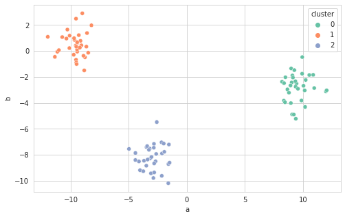
최적의 K값 찾기
- make_blobs로 만든 예시 데이터의 경우, 사전에 3개의 분류임을 알고 있었기에 K=3으로 지정해서 진행했지만, 보통은 몇 개의 cluster로 나눠야 할 지 쉽게 알 수 없다.
- 2차원인 경우, 시각화해서 눈으로 판단하는 것도 가능하지만, 보통의 데이터는 3차원 이상이기에,,, 아래 방식들을 사용하면 좋음!
1. Elbow 방식
- K값을 1부터 차례로 넣어보면서, 각 결과의 inertia(클러스터 내 오차제곱합)를 구한다
- K값에 따른 inertia의 변화를 보고, 그래프의 팔꿈치 부분에 해당하는 지점을 K값으로 선택 (intertia가 감소하는 정도가 낮아지는 지점)
- ※ inertia는 cluster 수가 증가할 수록 감소함. (trade-off 관계.)
inertias = []
for i in range(1, 11):
kmeans = KMeans(n_clusters=i)
kmeans.fit(X)
inertias.append(kmeans.inertia_)
plt.plot(range(1,11), inertias, marker='o')
plt.xlabel('Num_Clusters')
plt.ylabel('Inertia')
plt.show()
# 결과: 3이 최적의 Cluster
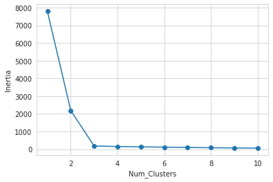
2. Silhouette Score (Silhouette Coefficient)
- $ \frac{(b-a)}{max(a, b)} $로 계산
- a: 특정한 sample i로부터 같은 Class에 속한 다른 점들까지의 평균 거리 (mean intra-cluster distance)
- b: 특정한 sample i로부터 가장 가까운 옆 Class에 속한 점들까지의 평균 거리 (mean nearest-cluster distance)
- 숫자가 클수록 잘 분류된 것. (숫자가 크다는 것은 타 cluster와는 거리가 있고, 같은 cluster 내에서는 잘 모여 있다는 의미)
from sklearn.metrics import silhouette_score
silhouette = []
for i in range(2, 11):
kmeans = KMeans(n_clusters=i)
kmeans.fit(X)
silhouette.append(silhouette_score(X, kmeans.labels_))
plt.plot(range(2,11), silhouette, marker='o')
plt.xlabel('Num_Clusters')
plt.ylabel('Silhouette Score')
plt.show()
# 결과: 3이 최적의 Cluster
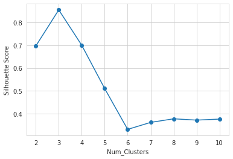
3. CH Index (Calinski-Harabasz Index)
- 잘 분류된 클러스터는 (1) 내부의 점들끼리 compact하게 모여 있고, (2) 나머지 cluster로부터는 멀리 떨어져있어야 한다는 점에 착안한 Index
- $ \frac{BCV}{k-1} * \frac{n-k}{WCV} $로 계산
- BCV: Between-Cluster Variation: 서로 다른 클러스터끼리 얼마나 떨어져있는지. – 클수록 좋음
- WCV: Within-Vluster Variation: 서로 같은 클러스터에 있는 점끼리 얼마나 떨어져있는지. – 작을수록 좋음
- k: # of clusters
- n: # of datapoints
- 숫자가 클수록 잘 분류된 것. (숫자가 크다는 것은 타 cluster와는 거리가 있고, 같은 cluster 내에서는 잘 모여 있다는 의미)
from sklearn.metrics import calinski_harabasz_score
ch_index = []
for i in range(2, 11):
kmeans = KMeans(n_clusters=i)
kmeans.fit(X)
ch_index.append(calinski_harabasz_score(X, kmeans.labels_))
plt.plot(range(2, 11), ch_index, marker='o')
plt.xlabel('Num_Clusters')
plt.ylabel('CH Index')
plt.show()
# 결과: 3이 최적의 Cluster
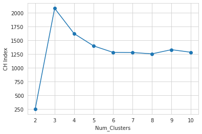
최적의 K값 찾기: yellowbrick
*yellowbrick: machine learning visualization library (https://www.scikit-yb.org/en/latest/)
- 최적의 cluster를 자동으로 찾아주고, clustering에 걸리는 시간 등도 간편하게 시각화할 수 있어서 편리하다
# 우선 설치해줘야 사용 가능
import sys
!{sys.executable} -m pip install yellowbrick
1. Elbow Method
# Import ElbowVisualizer
from yellowbrick.cluster import KElbowVisualizer
model = KMeans()
visualizer = KElbowVisualizer(model, k=(1,30), timings=True) # k is range of number of clusters.
visualizer.fit(X) # Fit the data to the visualizer
visualizer.show();
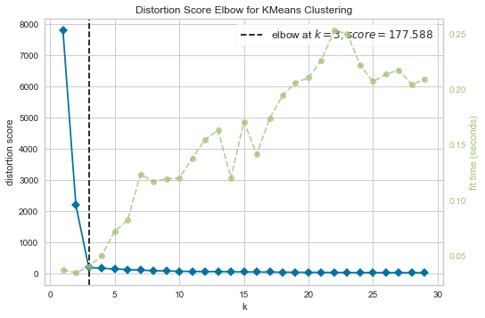
2. Silhouette Score
model = KMeans()
visualizer = KElbowVisualizer(model, k=(2,30), metric='silhouette', timings=True)
visualizer.fit(X)
visualizer.show();
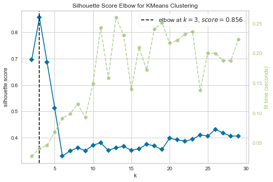
3. CH Index
model = KMeans()
visualizer = KElbowVisualizer(model, k=(2,30), metric='calinski_harabasz', timings=True)
visualizer.fit(X)
visualizer.show();
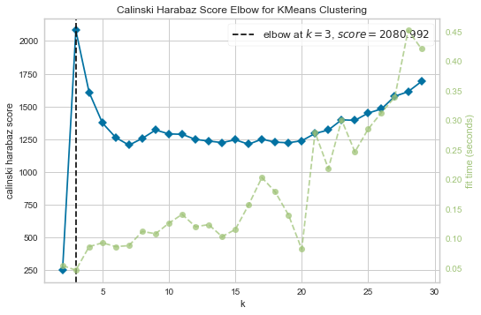
Hierarchical Clustering
(계층적 군집 분석)
기본 개념
- K Means와 달리, 중심을 먼저 잡고 시작하는 게 아니라, 일단 모든 벡터의 거리를 다 계산 → 거리가 가장 짧은 것끼리 차근차근 묶어나감. (그룹의 수를 사전에 정하지 않음)
- 계속 연결해나가서 하나의 완벽한 cluster로 묶일 때까지 묶는 작업을 계속함
- Dendrogram 보고 cluster 개수를 얼마 정도로 할 지 고려해서 적당히 잘라줌
*Cluster 간 거리를 계산하는 법: (※ 데이터포인트 간의 거리는 Euclidean이나 Cosign 방식 등으로 계산)
- Single: 각 클러스터를 구성하는 데이터포인트 중 가장 가까운 데이터포인트 간의 거리로 계산
- Complete: 각 클러스터를 구성하는 데이터포인트 중 가장 먼 데이터포인트 간의 거리로 계산
- Average: 각 클러스터를 구성하는 데이터포인트들의 평균점 간의 거리로 계산
- Ward: 두 개의 클러스터가 합쳐졌을 때의 데이터포인트들이 갖는 분산 (오차제곱합)이 가장 작은 클러스터끼리 묶어주는 방식
※ 4개의 linkage type은 데이터셋의 분포에 따라 결과가 상이하므로, 데이터셋에 따라 적절히 선택
Dendrogram 그려보기
from sklearn.datasets import load_iris
from sklearn.cluster import AgglomerativeClustering
import pandas as pd
import numpy as np
import seaborn as sns
import matplotlib.pyplot as plt
from scipy.cluster.hierarchy import dendrogram, linkage
1. 데이터 준비
# iris dataset 사용
iris_data = load_iris()
X = pd.DataFrame(iris_data.data, columns=iris_data.feature_names)
X.head()
| sepal length (cm) | sepal width (cm) | petal length (cm) | petal width (cm) | |
|---|---|---|---|---|
| 0 | 5.1 | 3.5 | 1.4 | 0.2 |
| 1 | 4.9 | 3 | 1.4 | 0.2 |
| 2 | 4.7 | 3.2 | 1.3 | 0.2 |
| 3 | 4.6 | 3.1 | 1.5 | 0.2 |
| 4 | 5 | 3.6 | 1.4 | 0.2 |
2. Dendrogram 그려보기
- Scipy 활용
- 어떻게 묶일지 시뮬레이션 + 몇 개 Cluster로 나눌지 고민
- 어떤 linkage type을 쓰면 좋을지, 몇 개의 Cluster를 쓰면 좋을지 고민
plt.figure(figsize=(15, 5))
L = linkage(X, 'single')
dn = dendrogram(L)
plt.title("Dendrograms: Single")
plt.show()
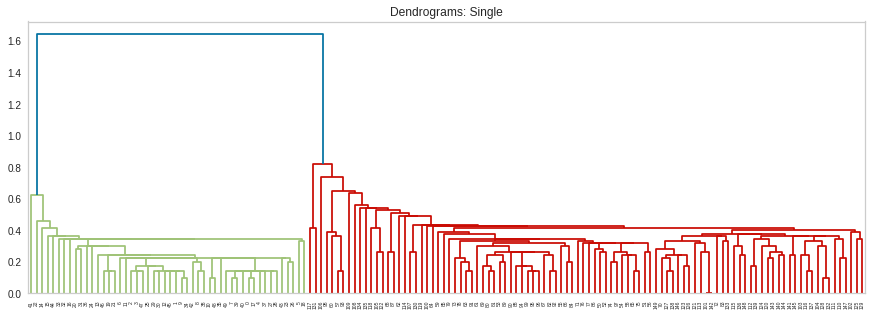
plt.figure(figsize=(15, 5))
L = linkage(X, 'ward')
dn = dendrogram(L)
plt.title("Dendrograms: Ward")
plt.show()
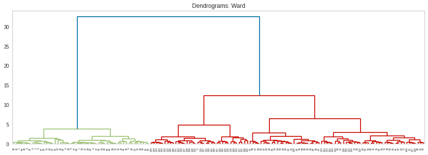
- single로 묶는다면 2개의 cluster로, ward로 묶는다면 2-3개의 cluster로 묶는 게 좋을 것 같다고 판단
- complete나 average 방식도 구현해보고 비교해보면 좋음
scikit-learn으로 구현
3. Clustering
model = AgglomerativeClustering(n_clusters=3) # iris dataset이므로, n_clusters=3으로 선택
model.fit(X)
AgglomerativeClustering(affinity='euclidean', compute_full_tree='auto',
connectivity=None, distance_threshold=None,
linkage='ward', memory=None, n_clusters=3)
- affinity: 데이터포인트 간의 거리를 어떻게 계산할지 결정. euclidean, cosine, l1, l2, manhattan 중에 고를 수 있으며, default는 euclidean.
- linkage=’ward’로 하려면 euclidean밖에 선택할 수 없음
- linkage: ward, complete, average, single 중에 선택. (default는 ward)
4. Clustering 결과 구현
result = X.copy()
result["cluster"] = model.labels_
result.head()
| sepal length (cm) | sepal width (cm) | petal length (cm) | petal width (cm) | cluster | |
|---|---|---|---|---|---|
| 0 | 5.1 | 3.5 | 1.4 | 0.2 | 1 |
| 1 | 4.9 | 3 | 1.4 | 0.2 | 1 |
| 2 | 4.7 | 3.2 | 1.3 | 0.2 | 1 |
| 3 | 4.6 | 3.1 | 1.5 | 0.2 | 1 |
| 4 | 5 | 3.6 | 1.4 | 0.2 | 1 |
+) pairplot으로 clustering이 잘 되었나 살펴보기
# 4차원으로 시각화할 수는 없지만, seaborn의 pairplot으로 어느 정도 다각도로 살펴볼 수는 있음
sns.pairplot(result, hue='cluster')
plt.show()
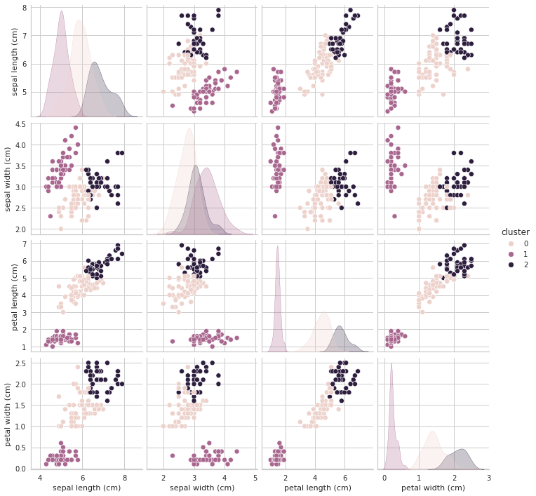
최적의 K값 찾기: yellowbrick
- 마찬가지로, iris data처럼 cluster 수를 알고 있는 상황이 아니라면, 아래와 같은 방식들을 사용해 최적의 K값을 찾아보고 clustering을 구현하는 것이 좋다
1. Elbow Method
# Import ElbowVisualizer
from yellowbrick.cluster import KElbowVisualizer
model = AgglomerativeClustering()
visualizer = KElbowVisualizer(model, k=(1,30), timings=True)
visualizer.fit(X)
visualizer.show();
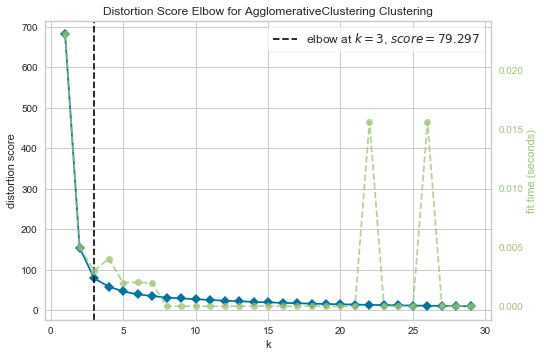
2. Silhouette Score
model = AgglomerativeClustering()
visualizer = KElbowVisualizer(model, k=(2,30), metric='silhouette', timings=True)
visualizer.fit(X)
visualizer.show();
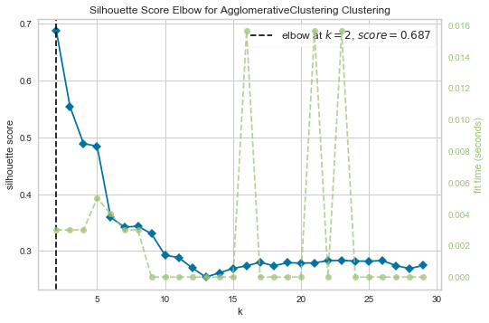
3. CH Index
model = AgglomerativeClustering()
visualizer = KElbowVisualizer(model, k=(2,30), metric='calinski_harabasz', timings=True)
visualizer.fit(X)
visualizer.show();
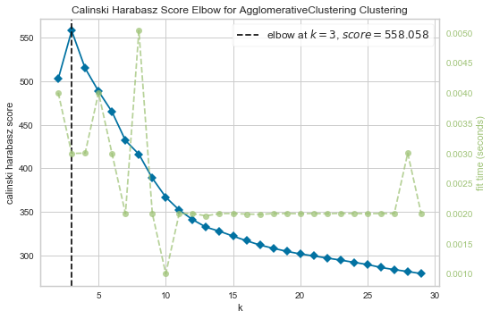
- 대체로 2-3개의 cluster로 나누는 것이 좋다는 결론 (사실 iris data에서 virginica와 versicolor는 꽤 유사하기 때문)